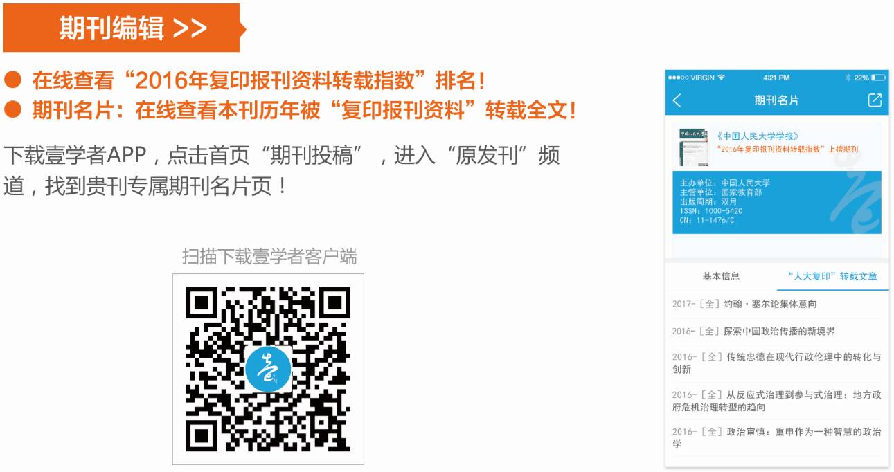

收录于合集


壹学者 联合 国政学人 微信公众平台共同发布 2016年度复印报刊资料转载指数排名 ！
该排名由中国人民大学人文社会科学学术成果评价研究中心联合中国人民大学书报资料中心共同发布。
2016年度复印报刊资料转载指数排名今天正式发布。
由中国人民大学人文社会科学学术成果评价研究中心联合中国人民大学书报资料中心研制的2016年度复印报刊资料转载指数排名今天正式发布。
该排名根据人大复印报刊资料近100种 学术系列期刊 ****在2016年度转载的学术论文数据，对中国人文社科期刊和教学科研机构进行了统计排名。包括：
● 综合性期刊按系统排名： ****从转载量、转载率和综合指数三个量度，对我国高等院校、社科院（联）、党政干部院校三大系统主办的综合性期刊进行排名。
● 期刊按专业学科排名： 从转载量、转载率和综合指数三个量度，按学科对期刊进行专业排名。
● 教学科研机构按系统排名： 根据论文作者所属单位，从转载量和综合指数两个量度，对我国高等院校、社科院（联）、党政干部院校三大系统内各教学科研单位进行排名。
● 高等院校及其二级院所按学科排名： 根据论文作者所属机构，从转载量和综合指数两个量度，按专业学科对高校及其二级院所进行排名。
自2001年起每年3月份， 《光明日报》、《中国新闻出版广电报》 等权威媒体都 同时发布 这个年度 “转载排行榜” 。
该排行榜和研究报告提供了有价值的客观数据和信息，在一定程度上反映了我国人文社科期刊阵营和学术研究机构的分类、布局、水平、变化和发展态势等状况，一直受到期刊界、教学科研机构和广大人文社会科学工作者的高度关注和广泛重视。
由于版面限制，本文主要呈现2016年度复印报刊资料转载综合指数排名中，人文社科综合性期刊转载综合指数排名、高等院校转载综合指数排名两个榜单。
人文社科综合性期刊转载综合指数排名
期刊名称| 转载量
归一值| 转载率
归一值| 篇均分
归一值| 综合指数| 名次
中国社会科学| 0.831579| 0.949976| 0.934680| 0.898028| 1
学术月刊| 1.000000| 0.732008| 0.898783| 0.889237| 2
中国人民大学学报| 0.663158| 1.000000| 0.881106| 0.829595| 3
文艺研究| 0.842105| 0.661376| 0.902611| 0.806038| 4
社会科学战线| 0.894737| 0.308743| 0.880895| 0.714786| 5
探索与争鸣| 0.810526| 0.418569| 0.865182| 0.709336| 6
清华大学学报
（哲学社会科学版）| 0.494737| 0.717338| 0.916296| 0.687985| 7
江海学刊| 0.600000| 0.481256| 0.897869| 0.653738| 8
外国经济与管理| 0.400000| 0.662829| 0.863054| 0.617765| 9
社会科学| 0.578947| 0.391487| 0.886160| 0.614873| 10
复旦学报（社会科学版）| 0.421053| 0.577201| 0.903619| 0.612667| 11
北京大学学报（哲学社会科学版）| 0.389474| 0.533911| 0.919404| 0.591784| 12
南京社会科学| 0.568421| 0.324675| 0.880462| 0.588910| 13
澳门理工学报
（人文社会科学版）| 0.357895| 0.606385| 0.867878| 0.585437| 14
南开学报（哲学社会科学版）| 0.336842| 0.518303| 0.899150| 0.559973| 15
经济管理| 0.452632| 0.326574| 0.894752| 0.547451| 16
南京大学学报（哲学·人文科学·社会科学）| 0.294737| 0.510856| 0.908682| 0.543756| 17
文史哲| 0.284211| 0.549451| 0.882205| 0.543181| 18
人文杂志| 0.442105| 0.325203| 0.884844| 0.539856| 19
学术研究| 0.494737| 0.260850| 0.878833| 0.539800| 20
经济理论与经济管理| 0.284211| 0.446429| 0.911936| 0.521194| 21
天津社会科学| 0.336842| 0.373483| 0.908785| 0.519417| 22
学海| 0.389474| 0.317460| 0.893972| 0.519219| 23
教学与研究| 0.378947| 0.336134| 0.888344| 0.518922| 24
改革| 0.378947| 0.332226| 0.886560| 0.517215| 25
中国高校社会科学| 0.284211| 0.451128| 0.881636| 0.513514| 26
北京师范大学学报
（社会科学版）| 0.284211| 0.408163| 0.921149| 0.512478| 27
中山大学学报
（社会科学版）| 0.294737| 0.389864| 0.916854| 0.509910| 28
国外理论动态| 0.378947| 0.322841| 0.851763| 0.503960| 29
开放时代| 0.231579| 0.431119| 0.933130| 0.501906| 30
武汉大学学报
（人文科学版）| 0.273684| 0.393046| 0.911552| 0.500853| 31
河北学刊| 0.400000| 0.250280| 0.883119| 0.500020| 32
中州学刊| 0.452632| 0.185473| 0.872595| 0.498473| 33
华东师范大学学报
（哲学社会科学版）| 0.305263| 0.356835| 0.889366| 0.495966| 34
武汉大学学报
（哲学社会科学版）| 0.242105| 0.414863| 0.892470| 0.489042| 35
东岳论丛| 0.410526| 0.195283| 0.873402| 0.484816| 36
上海行政学院学报| 0.210526| 0.453515| 0.881137| 0.484606| 37
吉林大学社会科学学报| 0.273684| 0.346805| 0.902251| 0.484190| 38
苏州大学学报
（哲学社会科学版）| 0.305263| 0.317460| 0.886663| 0.483342| 39
上海大学学报
（社会科学版）| 0.200000| 0.437083| 0.886683| 0.477130| 40
中国软科学| 0.336842| 0.246571| 0.883488| 0.473755| 41
社会科学辑刊| 0.315789| 0.258799| 0.884968| 0.469446| 42
新视野| 0.273684| 0.343915| 0.852216| 0.468313| 43
中共浙江省委党校学报| 0.242105| 0.351038| 0.875683| 0.464858| 44
南京师大学报
（社会科学版）| 0.242105| 0.320245| 0.891353| 0.460321| 45
中共中央党校学报| 0.210526| 0.373483| 0.875547| 0.458919| 46
江汉论坛| 0.347368| 0.189786| 0.874914| 0.458357| 47
山东社会科学| 0.357895| 0.155978| 0.890648| 0.457146| 48
浙江社会科学| 0.326316| 0.192966| 0.880666| 0.452616| 49
南国学术
（澳门大学文科学报）| 0.147368| 0.370370| 0.938896| 0.451727| 50
广东社会科学| 0.273684| 0.238554| 0.890619| 0.448226| 51
同济大学学报
（社会科学版）| 0.200000| 0.335097| 0.870566| 0.441699| 52
华中科技大学学报
（社会科学版）| 0.200000| 0.284516| 0.914562| 0.439723| 53
山东大学学报
（哲学社会科学版）| 0.200000| 0.292803| 0.905818| 0.439586| 54
江淮论坛| 0.294737| 0.222222| 0.848914| 0.439236| 55
浙江大学学报
（人文社会科学版）| 0.189474| 0.321027| 0.881670| 0.436599| 56
经济与管理研究| 0.284211| 0.202156| 0.872910| 0.436204| 57
学习与探索| 0.326316| 0.156211| 0.862175| 0.436042| 58
北京行政学院学报| 0.200000| 0.298601| 0.883247| 0.434554| 59
江苏社会科学| 0.273684| 0.193755| 0.884481| 0.432944| 60
商业经济与管理| 0.200000| 0.269274| 0.901071| 0.431104| 61
南京农业大学学报
（社会科学版）| 0.189474| 0.303951| 0.880296| 0.431064| 62
理论探讨| 0.263158| 0.183715| 0.897418| 0.429603| 63
华中师范大学学报
（人文社会科学版）| 0.200000| 0.249246| 0.913187| 0.428730| 64
杭州师范大学学报
（社会科学版）| 0.189474| 0.288600| 0.887372| 0.428581| 65
文艺争鸣| 0.315789| 0.114194| 0.890324| 0.427671| 66
陕西师范大学学报
（哲学社会科学版）| 0.200000| 0.245193| 0.905849| 0.425313| 67
西南大学学报
（社会科学版）| 0.200000| 0.216969| 0.922793| 0.421929| 68
暨南学报
（哲学社会科学版）| 0.231579| 0.191872| 0.895269| 0.418774| 69
贵州社会科学| 0.273684| 0.131853| 0.871689| 0.410536| 70
中南民族大学学报
（人文社会科学版）| 0.210526| 0.151895| 0.935100| 0.410309| 71
云南大学学报
（社会科学版）| 0.147368| 0.274348| 0.891777| 0.408785| 72
华东理工大学学报
（社会科学版）| 0.147368| 0.271003| 0.892960| 0.408136| 73
甘肃社会科学| 0.273684| 0.135756| 0.855314| 0.406795| 74
学术前沿| 0.231579| 0.168699| 0.874367| 0.405551| 75
厦门大学学报
（哲学社会科学版）| 0.157895| 0.240500| 0.899735| 0.405229| 76
社会科学研究| 0.210526| 0.184570| 0.876500| 0.402531| 77
首都师范大学学报
（社会科学版）| 0.178947| 0.230634| 0.863542| 0.399832| 78
探索| 0.200000| 0.160419| 0.893080| 0.396050| 79
广州大学学报（社会科学版）| 0.189474| 0.170068| 0.895699| 0.395520| 80
中国青年社会科学（中国青年政治学院学报）| 0.178947| 0.187390| 0.890470| 0.394937| 81
西北师大学报（社会科学版）| 0.157895| 0.203500| 0.898467| 0.393748| 82
中共福建省委党校学报| 0.210526| 0.149745| 0.877253| 0.392310| 83
河南社会科学| 0.221053| 0.153610| 0.858486| 0.392050| 84
长白学刊| 0.168421| 0.193869| 0.879676| 0.389432| 85
求是学刊（黑龙江大学哲学社会科学学报）| 0.168421| 0.198413| 0.874658| 0.389290| 86
西部论坛| 0.115789| 0.239182| 0.896865| 0.387130| 87
中国地质大学学报（社会科学版）| 0.147368| 0.213675| 0.879624| 0.386937| 88
中共宁波市委党校学报| 0.157895| 0.228938| 0.848008| 0.386242| 89
文艺理论研究| 0.157895| 0.173792| 0.897883| 0.384661| 90
西南民族大学学报（人文社会科学版）| 0.221053| 0.070621| 0.916270| 0.384489| 91
北京社会科学| 0.189474| 0.164204| 0.862692| 0.383858| 92
河南大学学报（社会科学版）| 0.157895| 0.195160| 0.871719| 0.383222| 93
天津行政学院学报| 0.115789| 0.215559| 0.907269| 0.383164| 94
国际社会科学杂志（中文版）| 0.073684| 0.241546| 0.933966| 0.382127| 95
江苏行政学院学报| 0.136842| 0.189311| 0.895157| 0.380077| 96
中共杭州市委党校学报| 0.126316| 0.221484| 0.874067| 0.379192| 97
湖北大学学报（哲学社会科学版）| 0.168421| 0.164914| 0.873397| 0.378862| 98
中国农业大学学报（社会科学版）| 0.136842| 0.224293| 0.855605| 0.378706| 99
新疆师范大学学报（哲学社会科学版）| 0.126316| 0.168563| 0.918046| 0.376509| 100


高等院校转载综合指数排名
机构名称| 转载量
归一值| 篇均分
归一值| 综合指数| 名次
中国人民大学| 1.000000| 0.972329| 0.988932| 1
北京大学| 0.679214| 0.955789| 0.789844| 2
北京师范大学| 0.494272| 0.968323| 0.683892| 3
南京大学| 0.479542| 0.969991| 0.675722| 4
武汉大学| 0.471358| 0.959418| 0.666582| 5
复旦大学| 0.436989| 0.970260| 0.650297| 6
清华大学| 0.407529| 0.965218| 0.630605| 7
华东师范大学| 0.391162| 0.968911| 0.622262| 8
南开大学| 0.382979| 0.975366| 0.619934| 9
中山大学| 0.266776| 0.984474| 0.553855| 10
山东大学| 0.283142| 0.958258| 0.553188| 11
浙江大学| 0.279869| 0.952443| 0.548899| 12
吉林大学| 0.235679| 0.962399| 0.526367| 13
厦门大学| 0.230769| 0.966243| 0.524959| 14
华中师范大学| 0.204583| 0.979248| 0.514449| 15
南京师范大学| 0.212766| 0.959781| 0.511572| 16
首都师范大学| 0.175123| 0.964707| 0.490957| 17
上海交通大学| 0.170213| 0.956010| 0.484532| 18
四川大学| 0.165303| 0.958090| 0.482418| 19
中央财经大学| 0.144026| 0.966080| 0.472848| 20
苏州大学| 0.152209| 0.952664| 0.472391| 21
中南财经政法大学| 0.148936| 0.957002| 0.472162| 22
西南大学| 0.130933| 0.977697| 0.469639| 23
华南师范大学| 0.135843| 0.967638| 0.468561| 24
上海大学| 0.130933| 0.963754| 0.464061| 25
华中科技大学| 0.130933| 0.962857| 0.463703| 26
上海师范大学| 0.127660| 0.962943| 0.461773| 27
华东政法大学| 0.150573| 0.927124| 0.461193| 28
陕西师范大学| 0.121113| 0.966638| 0.459323| 29
西南政法大学| 0.137480| 0.936214| 0.456974| 30
中国政法大学| 0.132570| 0.928917| 0.451109| 31
浙江师范大学| 0.101473| 0.974435| 0.450658| 32
对外经济贸易大学| 0.117840| 0.943846| 0.448242| 33
东北师范大学| 0.112930| 0.949463| 0.447543| 34
上海财经大学| 0.094926| 0.971629| 0.445607| 35
西南财经大学| 0.088380| 0.980941| 0.445404| 36
暨南大学| 0.106383| 0.952158| 0.444693| 37
东北财经大学| 0.083470| 0.983924| 0.443652| 38
河南大学| 0.098200| 0.960909| 0.443284| 39
中央民族大学| 0.090016| 0.965218| 0.440097| 40
西安交通大学| 0.091653| 0.962496| 0.439990| 41
湖南大学| 0.072013| 0.974548| 0.433027| 42
同济大学| 0.088380| 0.935215| 0.427114| 43
东南大学| 0.075286| 0.953476| 0.426562| 44
兰州大学| 0.068740| 0.957784| 0.424358| 45
江西财经大学| 0.058920| 0.971872| 0.424101| 46
山西大学| 0.062193| 0.966190| 0.423792| 47
南京农业大学| 0.060556| 0.967416| 0.423300| 48
浙江财经大学| 0.055646| 0.974520| 0.423196| 49
湖南师范大学| 0.076923| 0.942532| 0.423167| 50
天津师范大学| 0.073650| 0.946029| 0.422602| 51
南京财经大学| 0.037643| 0.995038| 0.420601| 52
云南大学| 0.062193| 0.957499| 0.420315| 53
华侨大学| 0.062193| 0.956811| 0.420040| 54
广东外语外贸大学| 0.036007| 0.994116| 0.419251| 55
华南理工大学| 0.068740| 0.944694| 0.419122| 56
中南大学| 0.058920| 0.956864| 0.418098| 57
山东师范大学| 0.057283| 0.958639| 0.417825| 58
杭州师范大学| 0.055646| 0.957243| 0.416285| 59
扬州大学| 0.045827| 0.970675| 0.415766| 60
黑龙江大学| 0.036007| 0.985108| 0.415647| 61
广州大学| 0.047463| 0.965913| 0.414843| 62
曲阜师范大学| 0.024550| 1.000000| 0.414730| 63
中国传媒大学| 0.055646| 0.950101| 0.413428| 64
浙江工商大学| 0.050736| 0.956239| 0.412937| 65
江苏师范大学| 0.047463| 0.960572| 0.412707| 66
华南农业大学| 0.029460| 0.986244| 0.412174| 67
宁波大学| 0.065466| 0.930621| 0.411528| 68
南京审计大学| 0.036007| 0.972941| 0.410781| 69
安徽财经大学| 0.045827| 0.957656| 0.410559| 70
安徽大学| 0.072013| 0.917819| 0.410335| 71
西北师范大学| 0.050736| 0.949011| 0.410046| 72
辽宁大学| 0.055646| 0.941401| 0.409948| 73
上海外国语大学| 0.031097| 0.977615| 0.409704| 74
深圳大学| 0.044190| 0.954070| 0.408142| 75
东北大学| 0.034370| 0.967749| 0.407722| 76
华东理工大学| 0.049100| 0.945438| 0.407635| 77
山东财经大学| 0.039280| 0.959849| 0.407508| 78
首都经济贸易大学| 0.054010| 0.932713| 0.405491| 79
安徽师范大学| 0.034370| 0.962048| 0.405441| 80
云南师范大学| 0.026187| 0.973998| 0.405311| 81
重庆大学| 0.039280| 0.954343| 0.405305| 82
福建师范大学| 0.045827| 0.942185| 0.404370| 83
中南民族大学| 0.032733| 0.960952| 0.404021| 84
中国海洋大学| 0.039280| 0.948608| 0.403011| 85
华中农业大学| 0.036007| 0.949981| 0.401597| 86
湘潭大学| 0.039280| 0.943060| 0.400792| 87
南昌大学| 0.032733| 0.950688| 0.399915| 88
河北大学| 0.057283| 0.911398| 0.398929| 89
北京科技大学| 0.027823| 0.953042| 0.397911| 90
北京联合大学| 0.027823| 0.951581| 0.397326| 91
河海大学| 0.042553| 0.927297| 0.396451| 92
中国青年政治学院| 0.029460| 0.945721| 0.395964| 93
浙江工业大学| 0.037643| 0.930865| 0.394932| 94
北京交通大学| 0.047463| 0.915914| 0.394843| 95
天津大学| 0.036007| 0.933009| 0.394808| 96
江西师范大学| 0.027823| 0.945083| 0.394727| 97
上海对外经贸大学| 0.024550| 0.948393| 0.394087| 98
西北大学| 0.075286| 0.872225| 0.394062| 99
西北政法大学| 0.036007| 0.930811| 0.393929| 100
欲知2016年度复印报刊资料转载指数全部排名情况，敬请登录中国人民大学书报资料中心官网学术评价频道（ www.zlzx.org）查看。
◆ ** ◆ ◆**
投稿邮箱：yixuezhe@rucdm.com；编辑微信号 xuezheqy
获取更多资讯，敬请关注 壹学者与国政学人微信公众平台！
**
**
本文来源： 中国人民大学人文社会科学学术成果评价研究中心、 中国人民大学书报资料中心
编辑整理： “壹学者”移动学术科研服务平台、 国政学人微信公众平台


** ** ** ** ** ** ** 点击 阅读原文 ，查看“复印报刊资料重要转载来源作者（2016版）”电子证书**************